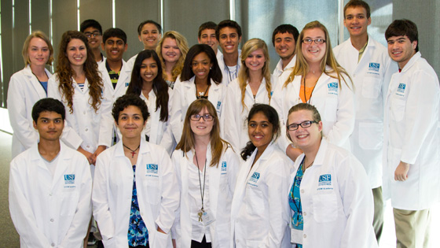

USF Pre-College 2012

STEM Academy
2012 Video
2012 Photos
July 8 - July 13, 2012
Residential
The USF STEM Academy is an intensive six day residential program that directly involves students in inquiry, discovery, and research in STEM disciplines. The 2012 STEM Academy will focus in the area of Diabetes: From Basic Research to Bedside. Students will have access to an internationally recognized faculty and USF's state-of-the-art research facilities.
Capped at 20 students, the STEM Academy is designed to provide all students one-on-one interactions with Academy professors and professionals. Students will be mentored throughout the Academy by doctoral graduate students and will work to solve Challenge Problems in small group settings. Group activities are tailored to encourage team building, shared ideas and collaboration, all key attributes for success in academics and research.
Experiencing university life, students will stay in USF Tampa residence halls, eat in the on-campus dining facilities that provide a huge selection of delicious and healthy food options, and make friends with peers who have similar interests.
Learning Objectives and Academy Outcomes
Students who attend the STEM Academy will:
- Understand the multitude of careers impacted by a STEM college degree
- Learn the basic science that underlies diabetes
- Observe diabetes research in a clinical setting and carry out hands on basic research for diabetes markers
- Visit USF research centers and network with research faculty
- Participate in literature research and review with USF library faculty
- Engage with graduate students to develop answers to diabetes Challenge Problems
- Present Challenge Problems solutions to faculty, staff and family members during the closing program
"Students who enter college with prior exposure to state-of-the-art STEM research, are uniquely positioned to engage faculty in undergraduate research activities that will enhance their academic performance and provide them with a competitive advantage in the job market and admission to graduate and professional programs." Richard Pollenz, Ph.D. Professor and STEM Academy Director
STEM Academy Faculty
Richard S Pollenz, Ph.D., STEM Academy Director
Professor, Associate Dean and Director Office for Undergraduate Research
Brant Burkhardt, Ph.D., STEM Academy Co-Director
Assistant Professor Department of Cell Biology, Microbiology and Molecular Biology
Jeff Krischer, Ph.D., Director, USF Diabetes Center
and the USF Pediatric Epidemiology Center
Professor of Pediatrics
Henry Rodriguez, MD, Clinical Director USF Diabetes Center
Professor of Pediatrics
Dan Lim, Ph.D., Advanced Biosensors Laboratory
Distinguished University Professor
Dorothy Schulman, MD, Chief, Division of Endocrinology, Diabetes & Metabolism
Professor of Pediatrics
Sureka Bollepalli, MD, USF Diabetes Center
Assistant Professor and Pediatric Endocrinologist, Department of Pediatrics
Claudia Cooperman, Ph.D., Director CMMB Health Sciences Program
Instructor Department of Cell Biology, Microbiology and Molecular Biology
Craig Bobik, MPH, USF Diabetes Center
Research and Professional Education
Grace Dougan, MD, USF Pediatric Epidemiology Center Fellow, Department of Pediatrics
Sandy Westerheide, Ph.D., Assistant Professor Department of Cell Biology, Microbiology, and Molecular Biology
Kendra Vehik, Ph.D., USF Pediatric Epidemiology Center, Assitant Professor of Epidemiology
Kristian Lynch, Ph.D., USF Pediatric Epidemiology Center, Visiting Assitant Professor of Pediatrics
Patty Burkhardy, Pharm. D., Medical Science Liason from Astellas Pharmaceuticals
Teresa Greely, Ph.D., College of Marine Sciences
Cool Links
- USF Diabetes Center
- USF Pediatric Epidemiology Center
- USF Department of Cell Biology, Microbiology and Molecular Biology
- USF Office for Undergraduate Research
Get the latest in our monthly newsletter.
We will only send you Pre-College information.